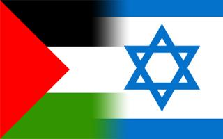
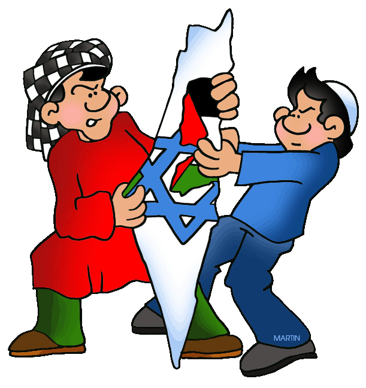

The Israel-Palestine conflict primarily boils down to poor planning done by the Imperial British government regarding the formation of a safe-haven for the systematically oppressed Jewish minority in Europe, during the early 20th century.
Zionist: A person who supports the Jewish populations right to establish a Jewish state in the region of Palestine.
In the late 1800s, the Zionist movement began to erupt in Europe, creating a revival in Jewish nationalism. Consequently, the British Secretary of Foreign Affairs declared British consent in the formation of a Jewish state in Palestine. As one would imagine, the Palestinians were not happy with this arrangement.
Eventually, In 1947, the British government transferred the situation unto the United Nations jurisdiction. The UN then decided to implement the Partition Plan which allocated 78% of Palestinian land to the Jews for the formation of Israel.
The Partition Plan led to the forced migration of Palestinian natives out of their homeland, into the surrounding arab countries. This then caused a war between Israel and the surrounding arab countries spanning from 1947-1949. The arab countries essentially wanted to destroy the state of Israel and showed no mercy in their strive. Miraculously, the Israelites emerged victorious against and began expanding their land further.
In 1967, Israel took control of the remaining 22% of Palestinian land: West Bank and the Gaza Strip. The Israeli government began to implement laws which practically ostracized the Islamic-Palestinian community, making them second class citizens in the established Jewish state. Palestinians, to this day, are not allowed to own land and are often unjustly incarcerated. This situation was often overlooked in the 1960s due to post-holocaust sympathy.
The conflict is still very much alive today. The United States government supplies the Israeli government with weaponry which they use to further oppress the palestinians and protect themselves from Islamic threats.
"Israel receives about $3 billion in direct foreign assistance each year, which is roughly one-fifth of Americas entire foreign aid budget."
- John J. Mearsheimer and Stephen M. Walt, Authors of The Israel Lobby and US Foreign Policy
Quite frankly, the Palestinian refugee population in Israel remains in their unfortunate situation due to YOUR tax dollars.